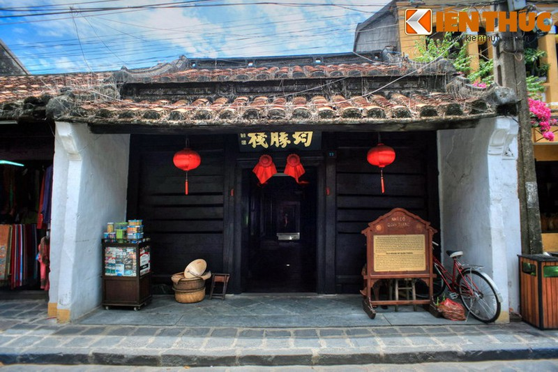

Hội An
Địa Điểm Tham Quan Phố Cổ
Du lịch Đà Nẵng đang ngày càng trở thành điểm đến lý tưởng cho kỳ nghỉ được du khách thập phương lựa chọn. Đến với thành phố đáng sống này, không một du khách nào không ghé thăm Hội An – một phố cổ giữ được gần như nguyên vẹn với hơn 1000 di tích kiến trúc từ phố xá, nhà cửa, hội quán, đình, chùa, miếu, nhà thờ tộc, giếng cổ… đến các món ăn truyền thống, tâm hồn của người dân nơi đây. Một lần du lịch Hội An sẽ làm say đắm lòng du khách bởi những nét đẹp trường tồn cùng thời gian, vô cùng mộc mạc, bình dị.
Phố cổ Hội An là một đô thị cổ nằm ở hạ lưu sông Thu Bồn, thuộc vùng đồng bằng ven biển tỉnh Quảng Nam, Việt Nam, cách thành phố Đà Nẵng khoảng 30 km về phía Nam.
Nơi đây có nhiều khu phố cổ được xây từ thế kỷ 16 và vẫn còn tồn tại gần như nguyên vẹn đến nay. Trong các tài liệu cổ của phương Tây, Hội An được gọi Faifo. Phố cổ Hội An được công nhận là một di sản thế giới UNESCO từ năm 1999. Đây là địa điểm thu hút được rất nhiều khách Du Lịch Đà Nẵng – Hội An.
Là một kiểu cảng thị truyền thống Đông Nam Á duy nhất ở Việt Nam hiếm có trên thế giới, Hội An giữ được gần như nguyên vẹn hơn một nghìn di tích kiến trúc như phố xá, nhà cửa, hội quán, đình, chùa, miếu, nhà thờ tộc, giếng cổ, mộ cổ… Đến đây du khách du lịch Hà Nội Đà Nẵng sẽ có dịp chiêm ngưỡng các kiến trúc vừa có sắc thái nghệ thuật truyền thống của Việt Nam, vừa thể hiện sự giao lưu hội nhập văn hoá với các nước phương Đông và phương Tây.
Phần lớn những ngôi nhà ở đây là những kiến trúc truyền thống có niên đại từ thế kỷ 17 đến thế kỷ 19, phần bố dọc theo những trục phố nhỏ hẹp. Nằm xen kẽ giữa các ngôi nhà phố, những công trình kiến trúc tôn giáo, tín ngưỡng minh chứng cho quá trình hình thành, phát triển và cả suy tàn của đô thị.
Hội An cũng là vùng đất ghi nhiều dấu ấn của sự pha trộn, giao thoa văn hóa. Các hội quán, đền miếu mang dấu tích của người Hoa nằm bên những ngôi nhà phố truyền thống của người Việt và những ngôi nhà mang phong cách kiến trúc Pháp.
Bên cạnh những giá trị văn hóa qua các công trình kiến trúc, Hội An còn lưu giữ một nền văn hóa phi vật thể đa dạng và phong phú. Cuộc sống thường nhật của cư dân phố cổ với những phong tục tập quán, sinh hoạt tín ngưỡng, nghệ thuật dân gian, lễ hội văn hóa vẫn đang được bảo tồn và phát triển. Hội An được xem như một bảo tàng sống về kiến trúc và lối sống đô thị.
Ngoài những giá trị văn hóa qua kiến trúc đa dạng, Hội An còn lưu giữ được nhiều hoạt động văn hóa phi vật thể với các lễ hội văn hóa đang được bảo tồn và phát huy cùng các làng nghề thủ công truyền thống, các món ẩm thực… làm cho Hội An ngày càng trở thành điểm đến hấp dẫn của du khách thập phương.
Hội An nổi tiếng bởi vẻ đẹp kiến trúc truyền thống, hài hòa của những ngôi nhà, bức tường và cả những con đường. Cùng với bao biến cố thăng trầm của lịch sử, phố cổ Hội An vẫn giữ những nét đẹp xưa cổ trầm mặc rêu phong trong từng mái ngói, viên gạch, hàng cây… như chính nét bình dị trong tính cách, tâm hồn thuần hậu, chân chất của người dân địa phương.
Kiểu nhà ở phổ biến nhất ở Hội An chính là những ngôi nhà phố một hoặc hai tầng với đặc trưng chiều ngang hẹp, chiều sâu rất dài tạo nên kiểu nhà hình ống. Những vật liệu chính dùng để xây dựng nhà ở đây đều có sức chịu lực và độ bền cao do đặc điểm khí hậu khắc nghiệt và bão lụt hàng năm của vùng này.
Thông thường, các ngôi nhà có kết cấu kiểu nhà khung gỗ, hai bên có tường gạch ngăn cách. Khuôn viên trung bình của các ngôi nhà có chiều ngang khoảng 4 đến 8 mét, chiều sâu khoảng 10 đến 40 mét, biến thiên theo từng tuyến phố. Bố cục mặt bằng phổ biến của những ngôi nhà ở đây gồm: vỉa hè, hiên, nhà chính, nhà phụ, hiên, nhà cầu và sân trong, hiên, nhà sau ba gian, vườn sau.
Những ngôi nhà ở Hội An hầu hết được làm theo dạng hai mái, đa số nhà chính và nhà phụ không chung một mái mà là hai nếp mái kế tiếp nhau. Rất ít trường hợp mái nhà chính phủ lên cả phần nhà phụ. Ngược lại, đa số nhà cầu được lợp theo kiểu bốn mái. Trên mặt bằng tổng thể thì nhà trước, nhà cầu và nhà sau được lợp bằng những mái riêng biệt. Ngói ở Hội An là loại ngói làm từ đất, mỏng, nung thô, mang hình vuông, mỗi cạnh khoảng 22cm và có dạng hơi cong. Khi lợp, đầu tiên người ta xếp một hàng ngói ngửa lên và sau đó tiếp tới một hàng ngói úp xuống.

Đường phố ở khu phố cổ được bố trí ngang dọc theo kiểu bàn cờ với những con phố ngắn và đẹp, uốn lượn, ôm lấy những ngôi nhà. Dạo bước chân qua từng con phố nhỏ xinh và yên bình ấy, du khách không chỉ được thưởng thức những món ăn ngon mà còn thấy được một phần cuộc sống sinh hoạt hàng ngày của người dân phố Hội, một cuộc sống yên bình, giản dị.
Nhắc đến Hội An, du khách chắc chắn không muốn bỏ lỡ “biểu tượng của Hội An” – Chùa Cầu. Chùa Cầu, hay còn được gọi là Chùa Nhật Bản nằm tiếp giáp giữa đường Nguyễn Thị Minh Khai và đường Trần Phú, là công trình kiến trúc độc đáo, tiêu biểu ở Hội An. Ngôi chùa này được các thương gia Nhật Bản đến buôn bán tại đây xây dựng vào khoảng giữa thế kỷ 16.
Là ngôi nhà cổ vinh dự trở thành Di sản cấp Quốc gia và là nơi duy nhất đón tiếp các Nguyên thủ Quốc gia, chính khách trong và ngoài nước. Nhà cổ kết hợp giữa lối kiến trúc Trung Hoa, Nhật Bản và Việt Nam. Với kiến trúc hình ống đặc trưng của đô thị cổ, địa điểm này gồm hai thanh ngang chồng lên nhau, tượng trưng cho thiên – nhân và 5 thanh dọc tượng trưng cho ngũ hành. Kiến trúc hài hòa của ngôi nhà nói lên mơ ước về sự hòa hợp giữa con người và thiên nhiên tại phố Hội.
Phố cổ Hội An vẫn luôn mang một nét đẹp riêng trong từng góc phố, từng mái nhà, và trên những con đường nhỏ. Đến đây, du khách có thể cảm nhận được sự ấm áp trong từng món ăn, từ nụ cười thân thiện, gần gũi của người dân. Thậm chí để cả cây cỏ, không gian nơi đây cũng hấp dẫn du khách.
Trong chuyến du lịch tại Hội An, du khách có thể thoải mái lựa chọn món ăn vặt trong vô vàn các cửa hàng, gánh hàng rong trên phố. Nếu muốn thưởng thức món chè bắp, bánh đập, hến xào ngon nhất ở Hội An, bạn nên tới quán bánh đập Bà Già, trên vỉa hè phố Trần Phú…
Du khách cũng có thể thử món ăn ngon ở Hội An nổi tiếng như mì Quảng tại rất nhiều nơi dọc phố cổ như quán bà Minh, trong chợ Hội An hay đầu phố Trần Phú. Ngoài ra, Cao Lầu cũng được xem là món ăn đáng để thử khi đi du lịch Hội An. Màu vàng óng, ăn sần sật với ít nước dùng ngon, rau thơm, tóp mỡ rán giòn sẽ khiến nhiều thực khách hài lòng. Làm sao có thể bỏ qua miếng bánh đập giòn rụm tan trong miệng. Thức uống có sức quyến rũ lạ kì, tỏa hương thơm nhè nhẹ cả góc đường Trần Phú. Nồi trà thơm lừng hương của lá sả, chanh và đặc biệt là thảo mộc. Lượng người xếp hàng khá đông, nhưng gương mặt ai cũng rạng rỡ, chờ đón ly trà mót thanh nhiệt. Đây chính là nước Mót - quán trà vỉa hè hot nhất tại phố hội.